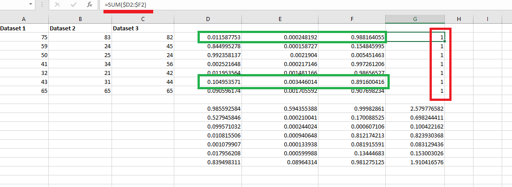
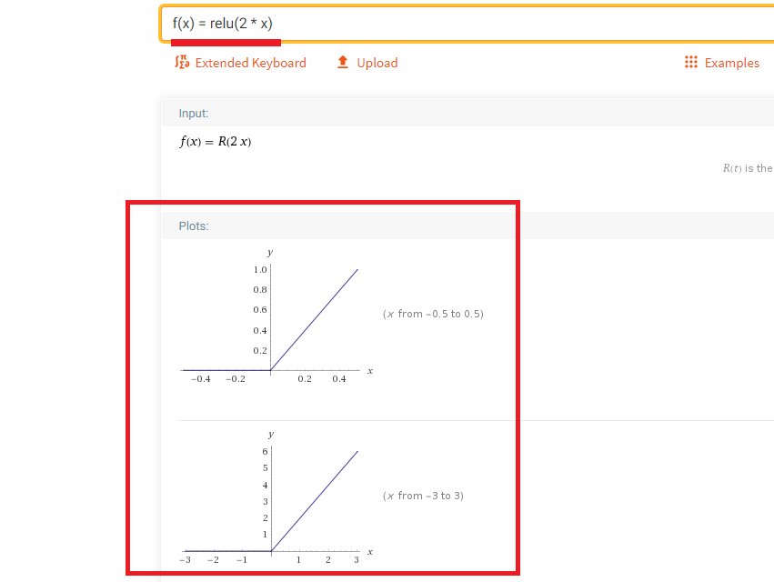
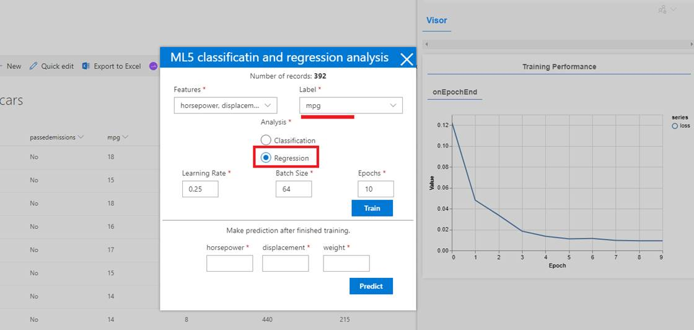

ml5.js
Classification and Regression Analysis
GitHub Repository: https://github.com/Ashot72/ml5-spfx-extension
Video link: https://youtu.be/NbO_ZIVHdus
ml5.js https://ml5js.org/ aims to make machine learning
approachable for a broad audience of artists, creative coders, and students.
The library provides access to machine learning
algorithms and
models in the browser, building on top of TensorFlow.js with no other external
dependencies.
I built an ml5 SPFx extension for classification and regression
analysis. I already built a KNN app (k-nearest-neighbor
algorithm, machine learning algorithm)
https://github.com/Ashot72/knn-tensorflowjs-spfx-extension
for classification and
regression analysis using TensorFlow.js https://www.tensorflow.org/js.
You may read
KNN first as I described how to import .csv data into SharePoint lists, displayed
some of TensorFlow.js operations, normalization, talked about
features and labels which are also
present in this app.
Actually, there
are 2 sets of TensorFlow APIs. First one is low level linear algebra API that I
used in KNN app and the second one is higher level API that makes
pretty easy to
make some more advanced machine learning algorithms. We use ml5.js which was built
on top of the TensorFlow.js which makes even much easier to
work with
tensorflow.js.
Figure 1
Deep Learning
is a subset of machine
learning in which artificial neural networks adapt and learn from vast amounts
of data. With tensorflow.js you can build a neural network with
the
help of layers
and model.
Model is a data structure that consists of layers
and defines inputs and outputs.
In the context
of neural networks, a layer is a transformation of the data
representation. It behaves like a mathematical function: given an input, it
emits an output. A layer can have
state captured by
its weights. The weights can be altered during the training of the
neural network. Usually we do not define layers with ml5.js though it is
possible.
Before running
analysis, we should understand if we solve classification or regression
problem.
A classification
problem has a discrete value as its output. It is not necessary to have 0/1
or true/false output in classification case. The output can for example
be colors such as,
red, green,
blue, yellow etc. some discrete values.
A regression
problem does not deal with discrete values. For example, to find a price
of a house based on its location, bedroom etc. Price is a continues
value. It can be $20000 or $200001 etc.
Multi linear
Regression Analysis
Figure 2
This is our cars
SharePoint list.
Mpg - miles per gallon is the efficiency of
the car telling you how many miles it can travel or how much distance it can
travel per gallon.
Displacement - more or less is the size of the
engine.
Horsepower - the power of the engine.
We are going to
figure out some relationship between some dependent variables and independent
variables using a linear regression approach. With linear regression we are
going to do
some initial
training of our model which takes some amount of time (seconds, minutes, hours
depending of the size of the dataset). Once we have the model that has
been trained,
we can then use it to make a prediction very quickly.
So, what is the
goal of linear regression?
Figure 3
We are going to
find an equation to relate some independent variable to a variable that we are
going to predict usually referred as the dependent variable. In this case we
might try to figure out some type of
mathematical
equation; for some particular horsepower value we predict mpg (miles per
gallon). We are going to have some input data and use some algorithm to predict
some output data.
Figure 4
The goal of
linear regression is to predict a relationship between those variables which
takes the form of an equation like MPG = m * HorsePower
+ b (e.g. MPG = 200 * HorsePower + 20).
We should
figure out m and b. m is the slope
of the line and b is the bias. This equation is represented
by a line that might be used to kind of predict or fit between all of our
different data points.
Figure 5
With linear
regression we are not restricting to having just one independent variable. We
can very easily have multiple independent variables.
Figure 6
I did linear
regression analysis using Excel scatterplot chart. I plotted out some
independent variable (horsepower) and dependent variable (mpg) and found some
mathematical relation
between two y
= -0.1578x + 39.936.
Before going ahead,
I would like to tell you just a few words about Residual analysis. The
analysis of residuals plays important role in validating the regression model.
Residual refers to the difference between
observed value vs. predicted value and every data point has one residual.
Figure 7
Right here we
have a regression line and its corresponding residual plot (you can produce a
residual plot in Excel).
It looks like
these residuals are pretty evenly scattered above and below the line. We could
say that a linear model here, the regression line, is a good model for this
data.
Figure 8
When you look
at just the residual plot, it does not look like they are evenly scattered. It
looks like there is some type of trend here.

Figure 9
Where you see
something like this, where on the residual plot you are going below x-axis and
then above then the linear model might not be appropriate. Maybe some type of
non-linear model.
Some type of
non-linear curve might better fit the data and the relationships between y and
x are nonlinear.
How to solve a linear
regression problem?
There are many
different approaches to solve linear regression problems; Ordinary Least
squares, Generalized Least Squares, Gradient Descend etc. Gradient
Descent
is an approach
that is used in many other very complicated machine learning algorithms. I do
not want to go into the details as there are tons of articles about it but in
general
Gradient
Descend is a general
function for minimizing a function, in regression case, the Mean Squared
Error cost function.
Figure 10
Means squared
equation (MSE) essentially produces a value that tells you how wrong or how bad
your guess is. It basically tells you how close a regression line is to a set
of points.
It does this by
the distances from the points to the regression line (these distances are the 'errors') and squaring them. The squaring is
necessary to remove any negative signs.
It also gives
more weight to larger differences. It is called mean squared error as
you are finding the average of a set of errors. (Guess Actual can be Actual
Guess as it is squared).
Σ summation symbol means take every one of your guesses
and every one of your actual values find the difference between the two, square
the result and then
some them altogether.
Figure 11
Let's imagine that some actual values are (43,41),
(44,45) etc., the green ones are guessed values and the equation is 0.8 * x +
9.2. Guess - Actual is essentially the
dotted line distance, the 'error'. Lets
calculate MSE for the following set of actual values: (43,41), (44,45), (45,49),
(46,47), (47,44)
Find the guesses based on y = 0.8 * x + 9,2 equation.
0.8 * 43 + 9.2 = 43.6
0.8 * 44 + 9.2 = 44.4
0.8 * 45 + 9.2 = 45.2
0.8 * 46 + 9.2 = 46.8
Figure 12
Now, calculating Actual - Guess (calculating Actual
- Guess instead of Guess - Actual as it should be squared at the
next step).
41 - 43.6 = -2.6
45 - 44.4 = 0.6
49 - 45.2 = 3.8
47 - 46 = 1
44 - 46.8 = -2.8
Figure 13
Figure 14
Add all of the squared errors up: 6.76 + 0.36 + 14.44 + 1 +
7.84 = 30.4
Figure 15
Find the mean square error 30.4 / 5 = 6.08
You might be curious, 6.08 what? What is that number actually
mean. MSE in isolation is not actually that useful. We can
not actually look at this number
and say that it is a good guess or this is a bad guess. In
order to quantify this guess and say that 6.08 is good or bad guess we have to
run the MSE again
with some other guess. We have to come up with a new equation
for the relationship between X and Y variables and run that equation again.
Once we have the second value for MSE we can say whether or
not 6.08 was good. In other words, MSE is only producing a value that we can
compare
in relation to other values to say whether or not a
particular guess is good or bad.
For the first y = 0.8 * x + 9,2 equation MSE is 6.08.
Just imagine for another equation y = -1.8 * x - 20,2 MSE is 4.2.
MSE 4.2 is smaller than 6.08 then we are closer the line
of best fit.
You must be thinking that if we could ever get our MSE down
to zero then we must have like a perfect guess. Even if we come up with an
extremely good guess
(Figure 11, it looks like it is probably as good a guess as
we could possibly get with a straight line) there is still some distances in
there (the dotted lines).
MSE is unlikely to ever be exactly zero. If we could find a
very low value of MSE we would have a very good equation or a very good guess.
Natural Binary
Classification - Logistic Regression
With linear
regression we are prediction continues values. For example, given the horsepower
of a vehicle we predict its mile per gallon (mpg) value which can be
13,24, 45 etc.
With logistic
regression we are going to use the algorithm to predict discrete values. Logistic
regression is used for classification type problems. Binary
classification problem is when we
take an
observation and then put it into one of two categories. For example, given some
users age are they likely to prefer an Apple phone or an Android
phone. Either A or B option, no other options.
Figure 16
Here is the
problem we want to solve. Given a person's age, do they wear M T Shirt or L? Note, we
have just one feature Age, and there are only two possible label values
that we
could apply to
a single person; a person either wears M shirt or L. This means
this is a binary classification problem.
Our goal is to
find a mathematical relationship (a formula) that relates a person's age to whether they like to wear an M shirt or L shirt.
We have a
dataset of 6 items. Let's
assume that people from age of 58 - 60 wear M shirt while people over 60
wear L size, just an assumption.
In preferred
size = m * age + b formula,preferred
size should be a number and for that reason we replace M with 0 and L with 1 as
there is no way to
multiply a
number by the string M or L.
Figure 17
I did linear
regression analysis with the independent variable Age, and dependent
variable T Shirt Size and plotted it out in Microsoft Excel.
The equation is
y = 0.2571 * x - 15.057 where x is the Age. You may notice that
someone who is 58 years old was predicted to have T Shirt Size value of -0.1452.
Someone who is
63 was predicted to have a T Shirt Size value of 1.1403. In some cases, we have
values greater than one (1.1403), in some cases we got predicted values that
are
negative
(-0.1452). In some other locations we got values that are between 0 and 1 such
as 0.369.
Let's assume for a moment that predicted
values between (0 - 1) are OK, outside (0 -1) are not good results. It has no
meaning to us. The thing is that if we use an equation m*x + b we
will never be
able satisfy the requirement and predicted values should be inside 0 -1 range.
We need to find out some other equation that is going somehow to give us a
relationship
between Age
and our predicted T Shirt Size that is not of the form of m *x + b.
Figure 18
We are going to
guess a different value of m and b by putting different x values to
this equation. e in this equation is Euler's constant number that is approximately
equal to 2.718
Figure 19
The equation
looks like this if you replace e with 2.718 in the formula.
Figure 20
General form of
this equation is what we call sigmoid equation which always produces a
value between 0 and 1. It really fits our problem when we were saying that only
values between 0 and 1
give us some
meaningful output.
Figure 21
If we plug in
some value of z right in the formula (Figure 20), what we are always
going to get out is some value that ranges from 0 to positive 1.
Figure 22
With our
sigmoid equation I plugged in different values of ages and got predicted T
Shirt Size. You see that this time predicted values are between 0 and positive
1. For the predicted value of age 25 I got
0.000178722
which is close to zero which indicates that someone with the age of 25 will
wear M Shirt Size.
Let's understand a little bit more why we
only care about values coming out of that equation that range between 0 and 1.

Figure 23
The closer the
line gets down to zero the more likely that someone will wear M Shirt
and as the line gets closer to one it is more likely that someone wears S
Shirt.
Figure 24
There is an
area where the line crosses over from 0 to 1 and it is a relatively gradual
shift.
Figure 26
People started with predicted value very close to zero which
means they are likely to wear M shirt then as they are getting older
57, 59 etc. years old people then the predicted values are
0.40, 0.52 etc. which means a gradual shift; wanting to wear L shirt. What the
values
that are not close to zero or one really mean for us? The
output of sigmoid equation in this example is probability of someone
wearing L shirt.
Now, we can say someone who is 25 years old has a probability
of 0.000178722 (or 0.0178722 percent) of wearing L shirt. No chance to wear L
shirt.
When someone is getting 51 years old their probability of
wearing L shirt is 12.51 percent.
The point of the logistic regression is not to get a
probability but care about classification. We should just say these people wear
M shirt and those ones L shirt.
We should say that with a probability less than this amount
is going to be assigned to label zero otherwise to one.
We refer to that as decision boundary.
Figure 27
A common decision boundary to use would be .5. This mean that
people with a probability of greater than 0.5 will be assigned to one
label classification and the others to zero.
For some problems the decision boundary may not be 0.5
say .99 might make a lot of sense. An example of this can be safety analysis,
cause a threat to human life
versus not to cause a threat to human life. You want to make
sure you are not causing threat to human life 99% of the time.
Multi-Value
Classification - Multinomial Logistic Regression
With
multinomial logistic regression we have the ability to apply multiple
different label values to classify a given observation. For example, given
a person's age what type of phone
do they prefer -
Android, Apple or Windows phone. There is no single either or (e.g.
Android or Apple) it might be the wide range of phones. So, a binary
classification problem could be
turned into
multiple classification type of problem with additional options or label values.

Figure 28
This is a dataset
similar to what we already have for binary classification (age, shirt). People
ages and their preferred phones.
Figure 29
We are going to
encode the values differently. We are going to do it three separate times and
take a look at all the different possible classification values. There are
three distinct possible
label values
Android phones, Apple phones and Windows phones. We use all these encoded
values to produce a new different encoded label set.
This type of
encoding is called one hot encoding which is a process by which
categorial variables are converted into a form that could be provided to
Machine
Learning algorithms to
do a better job in prediction.
Marginal vs
Conditional Probability
Marginal
Probability Distribution
is when we have probabilities that considers each possible output case in
isolation.
Conditional
Probability Distribution is
going to consider all possible output cases together when putting together a
probability.
We are
calculating Marginal Probability Distribution when we make use of Sigmoid
function.
Suppose we do
our analysis with different data set and we get as a result a .35 probability
for someone using Android Phone, .30 for Apple and .40 for Windows Phone.
We will take
the highest probability .45 and could say that this person uses Windows Phone.
Figure 30
What those
probabilities are telling us in terms of sigmoid function?
Probability
values that we see are probabilities of some observation using, say, .35
percent Android phone but it is no claiming about this person's probability
of using
Apple or Windows phones.
With a
marginal probability distribution, we get these probabilities that are only
informing the probability of a single output; a single characteristic.
In general, it
is possible that someone is using both Android, Apple and Windows phone but in
the classification analysis we do not really want to see a person
capable of
doing across a wide spectrum. We do not care that someone wants use an Android
phone, Apple or Windows. We only care about the phone
that he is most
likely going to use. We do not want a marginal probability distribution for
these probabilities we are calculating, because a marginal distribution
is going to
essentially give us probabilities of just a single outcome in isolation; just
using Android phone, just using Apple phone, just using Windows phone.
When you are
working with marginal probability distribution you can sum all these
probabilities together.
.30 + .40 + .45
= 1.15
If you sum
these probabilities and see that the total is not just up to 1 then it
possible means you are working with a marginal probability distribution.
Now, just
imagine that a probability of using Android phone is 0.3, Apple is 0.5 and
Windows is 0.2.
0.3 + 0.5 + 0.2
= 1
This possibly
means we are working with a conditional probability distribution as the
sum is up to 1, and there is some interconnected meaning with each other.
Sigmoid vs Softmax
Sigmoid
equation is always going to result in a marginal probability distribution. If
we want to move over to get into a conditional all we have to do is use a
slightly different equation.
Instead of Sigmoid
we are going to move over to a different equation called the Softmax equation. The Softmax
equation is specifically written to essentially consider different output
classes
and give us
probabilities that kind of do not isolate one output by itself. Instead, it is
going to take a couple of different probabilities and relate them (in relation
of each other).
Figure 31
On the
denominator we are going to take mx + b value of all our different
classifications and sum them all together.
Figure 32
For using
Android phone, we have an equation mx + b = 75. We are taking mx + b values and
put them into the equation (Figure 31). With this Softmax
equation we are considering
all the other
possible outcomes because it uses the outputs of those different classification
values.
If we total up
the probabilities it should be just 1.
0.0011 + 0.0002
+ 0.988 = 1
Figure 33
I would like to
show the difference between Sigmoid and Softmax in
Excel.
You see sigmoid
function (Figure 30) in the formula bar. For Dataset 1, mx + b part is
0.2571 * $A2 - 15.057 where $A2 is the absolute cell reference.

Figure 34
For Dataset
2 we assigned different values for m and b in mx + b equation
and another one is assigned for Dataset 3.
Figure 35
The sum of
those three probabilities is not 1.
Figure 36
We have the
same mx + b equation this time plugged into Softmax
equation (Figure 31).
Figure 37
For Dataset
2.

Figure 38
The sum is
always 1.
Neural
Networks
Figure 39
Machine
learning is a huge topic and it is simply not possible to cover everything.
Option A
illustrates a linear regression model. Option B is a reduced two-layer
network and the difference is that option B illustrates the nonlinear
(e.g. sigmoid
that you already know) activation function.
Activation
functions are
mathematical equations that determine the output of a neural network and used
at the last stage of a neural network layer. Activation function can be linear
and nonlinear.
Nonlinear activation functions can be used to increase the representation power
of a neural network. Examples of nonlinear activations include sigmoid,
hyperbolic
tangent (tanh)
as well as the rectified linear unit (ReLU)
function.
The sigmoid function
is a squashing nonlinearity, in the sense that it squashes all
real values from -Infinity to +Infinity into a much smaller range -1
to 1.

Figure 40
On the left it
is the sigmoid function S(x) = 1 / (1 + e ^ -x) and on the right
it is relu function relu(x)
= { 0: x< 0,x: x>= 0}
How
nonlinearity improves the accuracy of the model? Many relations in the world
are linear. For example, a linear relationship between production hours and
output in a factory
means that a 10
percent increase or decrease in hours will result in 10 percent increase or
decrease in the output. Many others are not linear; relation between a person's height
and his/ger
age. The height varies roughly linearly with age only up to a certain point. A
purely linear model cannot accurately model height/age relation, while the sigmoid
nonlinearity is
much better suites to model relation. In order to prove it you can create a,
say, 2 layered model in tensorflow.js and run the app with a sigmoid
activation function
or without it
(just comment activation: 'sigmoid'
line). You will see
that the one without sigmoid activation leads to higher final loss
values on the training.
Another
question you may ask is by replacing a linear activation with a nonlinear one
like sigmoid, do we lose the ability to learn any linear relations that
might be present in the data?
The answer is no.

Figure 41
The part of the
sigmoid function (the part closer to the center) is fairly close to
being a straight line. Other frequently used nonlinear activation functions
such as tanh and relu
also contain
linear or close to linear parts. If the relation between certain elements of
the input and output are approximately linear, it is entirely possible for a
layer with a nonlinear
activation to
learn the proper weights and biases to utilize the nonlinear part
of the activation function.
Another
important thing to understand is that nonlinear functions are different from
linear ones is that passing the output of one function as the input to another
function (cascading)
leads to richer sets of nonlinear functions.
Let's see it in action.
Figure 42
Navigate to https://www.wolframalpha.com/
Figure 43
Input f(x) =
2 * x linear function to see the plot.
Figure 44
g(x) = 1 - x
is the second function.
Figure 45
Let's cascade these two functions to define
a new function.
First function
is f(x) = 2 * x, the second one is g(x) = 1 - x
New, h(x) =
g(f(x)) = 1 - 2 * x
As you can see,
h is still a linear function. It just has a different slope and bias.
Cascading any number of linear functions always results in a linear function.

Figure 46
Now, cascading
two nonlinear relu functions.
The first
function is f(x) = relu(2 * x)
Figure 47
The second one
is g(x) = relu(1 - x)
Figure 48
First function
is f(x) = relu(2 * x), the second one is g(x) = relu(1
- x)
New, h(x) =
g(f(x)) = relu(1- relu(2 * x))
By cascading
two scaled relu functions, we get a function
that does not look like relu at all. It
has a new shape. Further cascading the step function with other relu functions
will give you
more diverse set of functions. In essence, neural networks are cascading
functions. Each layer of a neural network can be viewed as a function.
Nonlinear activation
functions
increase the range of input-output relations the model is capable of learning.
Application
Figure 49
We select three
features displacement, horsepower and weight and passedemissions as the label.
Given a
vehicle's weight, horsepower, and engine
displacement, will it PASS or NOT PASS a smog emissions
check?
That is the
problem we should solve.
Figure 50
Notice, here
for smog emissions we have two possible label values. It is definitely a
binary classification problem.
A given car can
either pass or not pass a smog emissions check.
Figure 51
SharePoint Cars
list has been imported from cars.csv file and SharePoint convert a true/false
value to Yes/No.
Figure 52
You may notice
that there are some options we specified which requires for training. These are
called hyperparameters.
Hyperparameters - are adjustable parameters in the
model that must tuned in order to obtain a model with optimal performance
(lowest
validation loss after training). The process of selecting good hyperparameter
values is referred to as hyperparameter optimization or
hyperparameter tuning.
Unfortunately, there is currently no definitive algorithm that can determine
the best hyperparameters given a dataset and
the machine-learning
task involved.
Learning
rate - is a
hyperparameter that controls how much to change the model in response to the
estimated error each time the model weights are updated.
Choosing the
learning rate is challenging as a value too small may result in a long training
process that could get stuck, whereas a value too large may result in
learning a
sub-optimal set of weights too fast or an unstable learning process. The
learning rate may be the most important hyperparameter when configuring
your neural
network.
Batch size - hyperparameter defines the number of
samples that will be propagated through the network. The higher the batch size,
the more memory space
you will need.
Epochs - One epoch is when an entire dataset is
passed both forward and backward through the neural network only once
Figure 53
Once you click
the train button you will see loss vs epochs plot.
A loss
function is an error measurement. This is how network measures its
performance on the training data and steers itself in the right direction.
Lower loss is better. As we train,
we should be
able to plot the loss over time and see it going down. If our model trains for
a long while and the loss is not decreasing, it could mean that our model is
not learning to
fit the data.
The loss
function that we use for binary classification task is binary cross
entropy, which corresponds to the binaryCrossEntropy
configuration in the model.
Our problem is
a binary classification problem as we stated. Vehicles will either PASS
or NOT PASS a smog emissions check.
The
configuration in multiclass or multinomial classification case is
the categoricalCrossentropy which categorizes
data points more than two options (blue, green, yellow).
Figure 54
ml5.js prefers categoricalCrossentropy option for modelLoss instead of binaryCrossEntropy
one for our binary classification problem.
Figure 55
It knows that there
are 2 options but categoricalCrossentropy is
the choice anyway.

Figure 56
Given a
vehicle's weight, horsepower, and engine
displacement, we want to predict mile per gallon mpg value. It is a multilinear regression
problem.
A regression
problem does not deal with discrete values as the mpg here can be 13,
14, 25 etc.
Figure 57
For the regression
case the modelLoss is set to meanSquaredError which we already discussed.
Figure 58
If you navigate
to ml5 web site you will see some default options that is required for neural
networks. You can modify them which we already did for learning rate, batch
size and epochs.